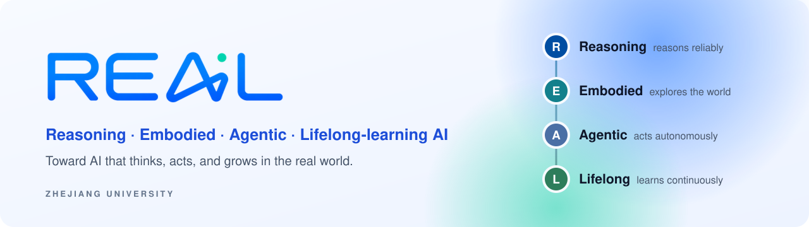

Research
Four pillars of real-world intelligence: Reasoning, Embodied, Agentic, and Lifelong-learning AI. We study the fundamental capabilities that connect them, not just each in isolation, toward AI that thinks, acts, and grows in the real world.
Reasoning: reason reliably
Models that can reason for as long as a problem requires, spend only the thinking it needs, and know when an answer is right.
| Direction | Focus | Representative work |
|---|---|---|
| Long-horizon reasoning | Break the context-length ceiling so reasoning can continue as long as the problem demands. | InftyThinkInftyThink+ |
| Efficient reasoning | Fit the amount of thinking to the difficulty of the problem and stop overthinking. | Self-Braking TuningLAPOMind the Gap |
| Verifiable reasoning | Verifiers and rewards that can be trusted, and models that pause instead of fabricate. | VerifyBenchCoVerRLPause or Fabricate? |
Embodied: explore the physical world
Taking intelligence off the screen: understanding 3D space, anticipating how the world changes, and acting through a body.
| Direction | Focus | Representative work |
|---|---|---|
| Spatial perception | Measure and teach the 3D understanding that 2D pretraining lacks, including viewpoints other than the camera's. | ViewSpatial-BenchSpatialLadderGPD |
| Self-evolving spatial intelligence | Let geometry and physical interaction supply their own supervision, without human labels. | SpatialEvoSpatial-Interactor |
| Prediction and world models | Reason about what happens next and keep a memory of the world over time. | SpaceCast-BenchWorldMemBench |
| Embodied action | Turn perception into reliable physical action and coordinated embodied behavior. | VLA-CorrectorOmniEmbodied |
Agentic: act autonomously as agents
Agents that plan, use tools, and carry long-horizon tasks through to completion across screens, software, and the open web.
| Direction | Focus | Representative work |
|---|---|---|
| GUI grounding | Locate exactly where to act on a screen, with dense rewards, test-time learning, and adaptive zoom. | GUI-G²GUI-RCPOReliable NegativesUI-Zoomer |
| Computer-use agents | Long-horizon control of real devices through multi-turn RL, GUI plus command line, and online self-improvement. | UI-S1EMPOUI-CopilotHybridCUAComputerSDReflect, Revise, ReuseClawGUI |
| Deep research agents | Search the open web, synthesize evidence, and carry a project from literature to a reviewed paper. | IterSynthBrowserForgeEviNote-RAGPaperGymPolaris |
| Code agents | Code and tests that co-evolve adversarially through reinforcement learning. | Code-A1 |
| Creation agents | Agents that discover, create, publish across platforms, and learn what actually works. | Easel |
| Tool orchestration | LLMs as controllers that plan, call expert models and tools, and compose the result. | HuggingGPTTaskBench |
| Agent evaluation | Interactive, personalized benchmarks and a plug-in harness that evaluates any agent in any environment. | KnowU-Benchageval |
Lifelong: learn continuously throughout their lifetime
Deployment is where learning continues: agents turn their own experience into guidance, skills, and better weights.
| Direction | Focus | Representative work |
|---|---|---|
| Guided exploration | Densify the sparse rewards of long-horizon agentic RL with adaptive hints and milestones. | Agent-G²BEACON |
| Skill internalization | Discover skills in context, then internalize them into the policy across tasks and modalities. | SKILL0ViSkillSkillRise |
| Self-distillation | Agentic RL with on-policy self-distillation, and the family of methods built on it. | SDARAgentOPSDPass the BatonRetireOPD |
| Post-deployment steering | Adjust a deployed model's behavior at inference time without retraining. | EasySteer |
| Self-evolving systems | Memory, skills, and orchestration that evolve with use, with every step attributable and reversible. | HugAgentOS |
Highlighted entries are open-source systems. Full list on the Publications page.